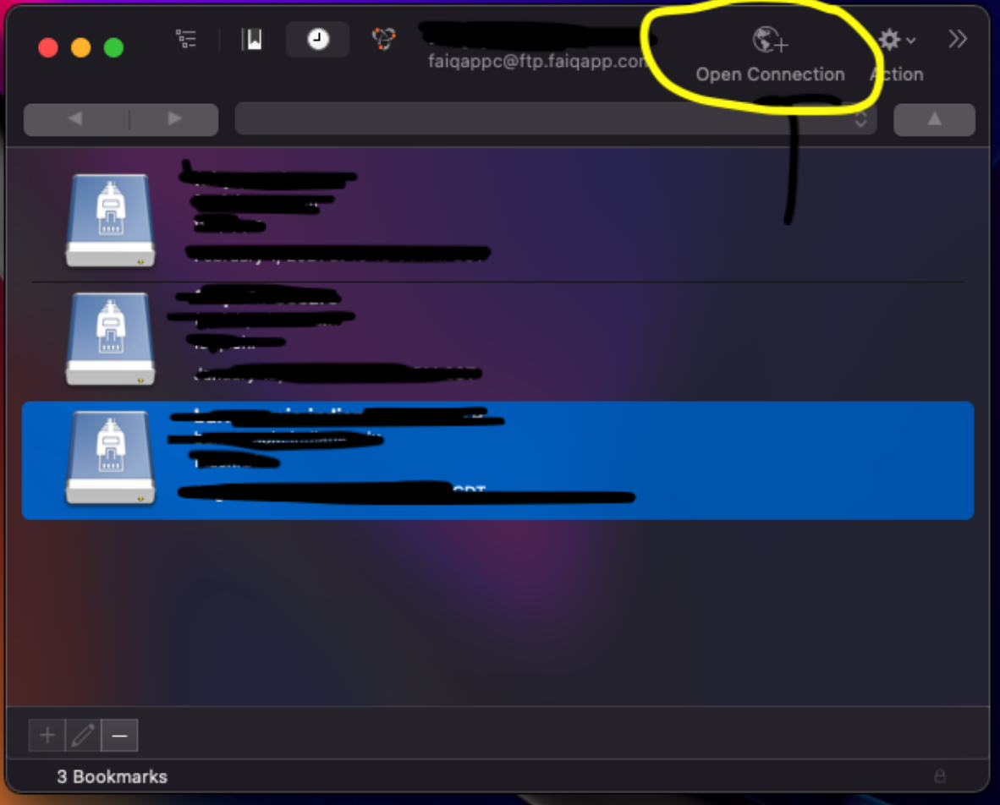
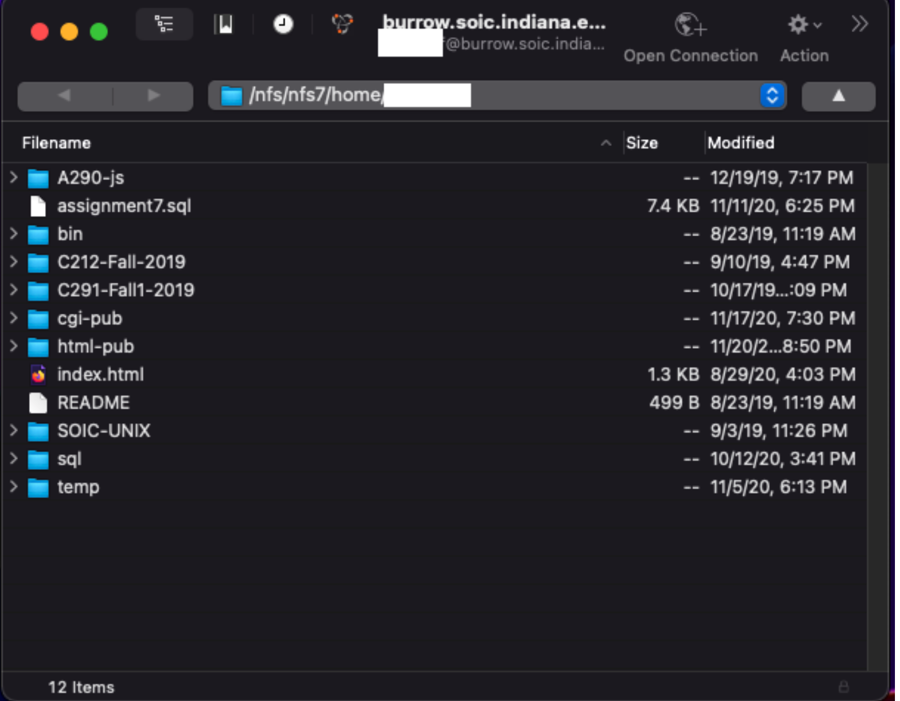

Lesson 6-1
CyberDuck
WINDOWS USERS: This stuff is not going to work on your machines. This chapter is meant for Mac users only. Please see chapter 7 for windows's equivalent tools.
Now in order to do some of the things that we do, we need tools. You need a screw to put together two pieces of wood, and a screwdriver to put in the screw. Working with Git is no different, and so I will show you some tools that you will find useful in your coding endeavour.
Cyberduck is a program that allows you to manage files on a remote server (i.e. your school/company's server). Think of it like a server-side finder window. You can drag/drop files from finder into a Cyberduck window and upload it to your server account.
Now I am aware that using this tool specifically can make you wonder "Why should I use Git Pull, or GitHub at all if I can just drag-n-drop files from my machine onto the server? Well you inquisitive soul, the reason is because of Version History! (this word ring a bell?) When you drag-n-drop directly onto a server, Git doesn't know that you did that until you commit/push your changes. This can also lead to merge conflicts, if for example, you and a peer are working on the same project and concurrently making commits.
So my suggestion is to only use CyberDuck when necessary, and do the labor intensive git pull/commit/push for the sake of your files and version history.
Now that I got all that jazz out of the way, let me show you how to use Cyberduck.
First time setup
- Download CyberDuck.
- Open CyberDuck and click "Open Connection".(see Figure 6A)  Figure 6A: Look at the top-right of the photo. That is what you want to click.
- Fill out the open connection form with your correct information. (IU students, use the following info:)
- SFTP (SSH File Transfer Protocol)
- Server: silo.luddy.indiana.edu
- Username: your IU username
- Password: your IU passphrase
- Once you have logged in, you should see a window that looks similar to this. (see Figure 6B)  Figure 6B: Yours might be blank at first, or contain very few files.
How do I get in after I set it up for the first time?
To reconnect next time, just click the clock icon in the top toolbar, and then find the connection you made before, and then you're back in!
Next we shall take a look at Terminal, a tool that on its own is very powerful.